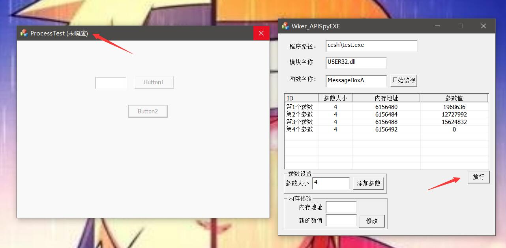

API函数监视器
这个工具是在之前的基础上修改的，主要的作用是监视某个进程的，作用就是监视某个函数，然后当这个函数被程序调用的时候我们就劫持他，让他的参数先传递给我们，我们通过修改参数或查看参数的值，然后达到我们的目的。
首先我们先简单的写一个一个验证的小程序：
1 | void CProcessTestDlg::OnBnClickedButton1() |
这里我用MFC写，为什么要用WriteProcessMemory函数，因为这个工具有的时候确实有的时候需要监视这个函数（其实也就是有的时候懒得做外挂，想直接抄别人的），内存地址不管对不对，反正能调用这个函数就好了，然后再来个MessageBox做下显示检测。
首先我们要监视函数，那么我们首先要知道这个函数在哪个DLL文件中，而且有点要注意的有两点：
- 在我编写测试的过程中发现了一个比较关键的一点，就是DLL文件我们要用大写，我不知道是不是别的机子要这样，反正我是这样子，可能是我HOOKAPI那块有点小纰漏，但是不影响。
- 还有就是要知道函数是分为两个版本的，宽字节和多字节，比较简单的判断就是看界面（反正看着有点老的就是多字节），还有就是看编写语言，反正判断方法很多，无非试两遍，比如
MessageBox其实在这是MessageBoxA，因为我把环境调节成了多字节。
程序由两部分组成，一部分是主程序，另一部分是DLL文件，这个DLL文件要程序放在一个DLL中，不是为了让住程序加载，而是为了让主程序知道DLL在哪，这个样子才能让我远程注入到其他程序。
首先我们写上必要的参数，也就是运行程序的路径（可以是绝对路径），然后要监视的API函数和对应的DLL模块。
然后我们要知道这个函数的参数是什么样子的，还需要知道参数大小，这个我们查MSDN就可以查出来，例如MessageBoxA：
1 | int MessageBox( |
可以看到，这几个都是四字节的，所以我们就可以添加四个四字节参数：
然后这个时候我们在测试程序中调用MessageBoxA，然后我们会看到我们程序出现这个情况：

点击按钮之后未响应，我们监控程序这边有了数据，可以看到MessageBoxA的参数都列举了出来，最后一个其实也就是MessageBox的类型，我们原先是默认的，我们现在随便调一个：
可以看到MessageBoxA的模式变了，我们再来监视一下写内存的那个函数：
现需要看下函数的原型：
1 | BOOL WriteProcessMemory( |
可以看到，还是都是四个字节的。Import Library: Use kernel32.lib.。
然后和上面一样，可以看到如下的结果：
可以看到和上面是一模一样的：
1 | WriteProcessMemory(GetCurrentProcess(),(LPVOID)1700988,(LPVOID)123,4,NULL); |
我们可以在劫持的这段时间进行内存的修改。
可能会有人说那个MessageBoxA怎么都是数字，其实是指针，你可以拿OD跟一下。
程序原理分析
程序效果都看到了，那就该看看到底是如何实现的了。
首先我在启动目标程序的时候，注入了DLL，这个DLL中包含了我们需要用到的内容，两个全局变量，这个之前我在博客中已经介绍到了，一个是用内存映射共享内存的，一个是用来HOOKAPI的，共享内存和HOOKAPI的类我也在之前的博客介绍过了。
这里共享一个结构体：
1 | struct CAPISpyData |
第一个是模块名，第二个是函数名，第三个是是否用户允许运行了，第四个是接受信息的窗口句柄。
这些都不是很重点，主要说一下程序的运行。
HOOKAPI的思路，也就是修改程序IAT导入表的值，寻找我们的函数，找到函数之后替换成我们的函数，比较关键的就是我们这个函数怎么写是最重要的。首先我们由于是不能确定函数是什么样子，也就是说我们不知道堆栈到底是怎么回事，所以我们只能用naked来修饰我们的函数，也就是说我们自己处理堆栈平衡，但是也正是因为我们没有办法使用正常的函数，这里就有了一个比较关键的一个事情，就是我们要想使用我之前写的那个内存共享类的话呢我们只能再次申请一个函数，用来传输数据，因为我们不能在naked的函数中使用初始化了变量，所以我们要到一个正常函数，在这个正常函数中，我们内敛汇编获取当前ebp的值，也就是栈顶，获取之后并不是真正的参数顶端，因为我们需要明白，在程序调用我们监视的函数时，在压入参数之后需要CALL，这个CALL将那个位置的eip压入了栈，这是第一个四字节，然后因为我们在调用哪个不得不调用的发送消息的函数（也就是上面内存共享类不能再naked函数中运行不得不写的函数），这个时候我们又CALL了一遍，又压入了第二个四字节，然后因为我们的函数是正常的C++函数，所以程序还会压入当前ebp为了最后恢复，到此为止我们压入了三个四字节，也就是一个C，所以我们程序要这么写：
1 | void NotifyCaller() |
我们获取到当前ebp的值的时候，通过消息的WPARAM参数传给我们的程序，这就是关键代码段，我们重载了PROC操作符，所以可以返回的是旧的函数地址，然后再跳回去，这个样子我们就保证了堆栈完全的平衡。
还有一点就是在我们等待的时候我在里面写了个Sleep，其实这个我做了几个测试，我没写任何代码的时候会出错，所以我加进去的。
在我们自定的相应消息的时候可以这么写：
1 | afx_msg LRESULT CAPISpyEXEDlg::OnHmSpyacall(WPARAM wParam, LPARAM lParam) |
只列出了部分关键代码，一些其他的不重要的也就不列出了，太长了。